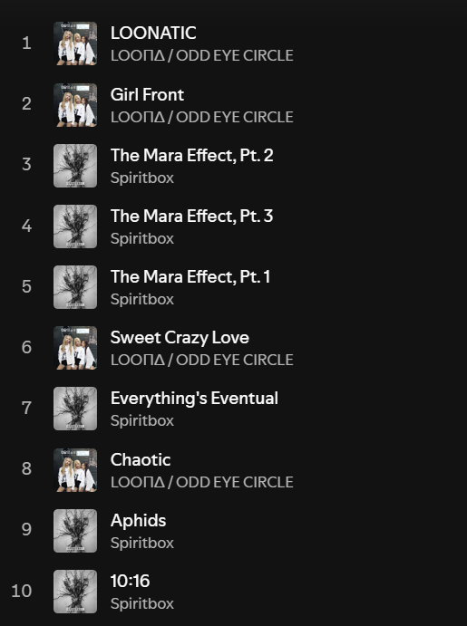

2025 wrapped top 10 songs. Such diversity! It's actually because I just listen to albums, so naturally the albums I
listen to the most would blot out the top X songs on Spotify Wrapped.
My most-listened-to albums in 2025 were by far Max & Match (ODD EYE CIRCLE), and
Spiritbox (Spiritbox). Runners-up included:
- New Levels New Devils - Polyphia
- DON'T TAP THE GLASS - Tyler, The Creator
- Tsunami Sea - Spiritbox
As for the ones that actually released in 2025, I think the top few would be:
- DON'T TAP THE GLASS - Tyler, The Creator
- Tsunami Sea - Spiritbox
- Let God Sort Em Out - Clipse